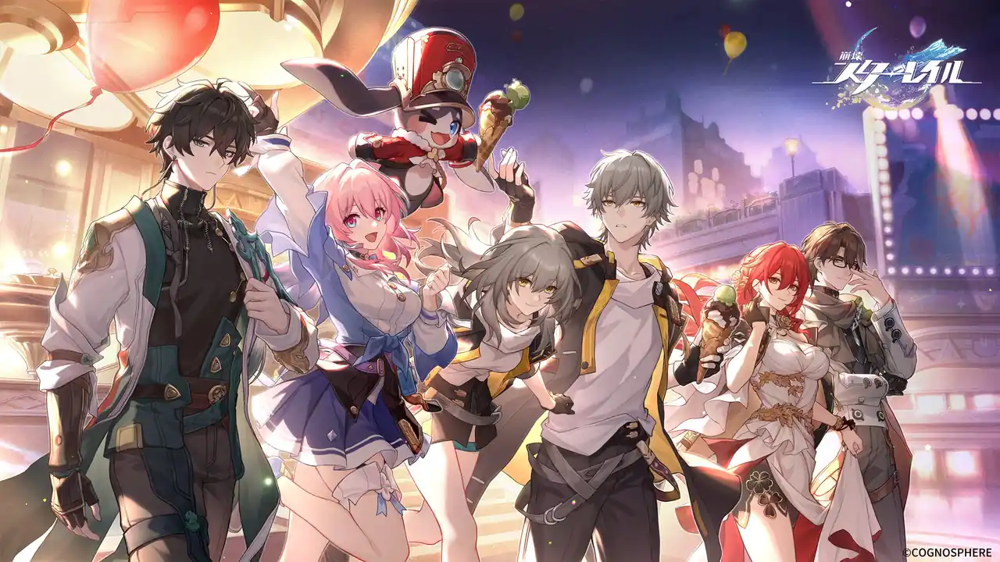

好きなゲーム
私が好きなゲームを紹介します。
原神

原神はオープンワールド型アクションRPGです。幻想的な世界「テイワット」を舞台に、7つの元素の力を駆使して冒険を繰り広げます。プレイヤーは「旅人」として、失われた双子の兄弟を探すゲームです。グラフィックがとても綺麗でストーリーもかなり作り込まれているのでとても面白いです。
ぷよぷよテトリス
ぷよぷよテトリスはぷよぷよとテトリスが合体したゲームです。ぷよ同士テト同士で戦ったり、ぷよとテトで戦うこともできます。そしてぷよとテトが交互に入れ替わるスワップというモードもあり、新鮮なゲームです。
GTA5

「グランド・セフト・オートV」は、ロックスター・ゲームスが開発・発売したアクションアドベンチャーゲームで、現代のアメリカを舞台にした自由度の高いオープンワールドが特徴です。圧倒的なスケールとディテールで描かれた都市「ロスサントス」と周辺地域を舞台に、スリリングなストーリーや多彩なアクティビティを楽しむことができます。
他の好きなゲーム

など...